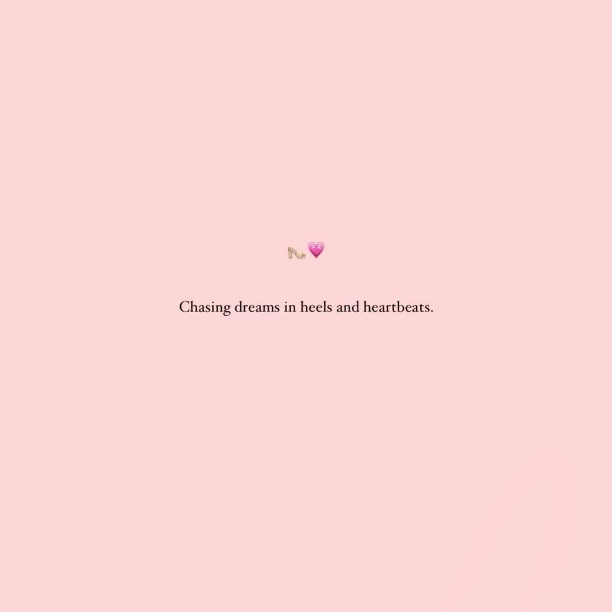

Welcome to Rael's World
Hi! I’m Victoria Rael Atieno, a vibrant soul in her early 20s with a heart tuned to the rhythms of empathy, curiosity, and creativity. I'm passionate about mental wellness, intentional living, and using technology to make the world a little softer — and smarter.
My journey into tech began not just with code, but with care. I believe the best solutions are the ones that listen first — to people, to pain points, to possibilities. Whether it’s building a therapist management system to support mental health professionals or helping digitize my family’s cereals business, I craft with compassion and purpose.
I’m someone who finds joy in the quiet: a well-written book, a soulful podcast, a playlist that understands your mood better than you do. I’m the kind of person who laughs loud, learns fast, and loves deeply. I enjoy coding, but I also enjoy human connection — which is why I strive to build websites that aren’t just functional, but feel human.
You’ll often find me sketching out ideas, journaling thoughts, or deep-diving into YouTube documentaries at 2 a.m. I’m part thinker, part doer, and full-time dreamer — with one foot in tech and the other in the stories that make us human.
Projects I’m Proud Of
- Therapist Management System: A digital platform to support mental health professionals with client records, appointments, and care tools.
- Online Cereals Shop: A system that modernizes my family business with digital ordering and inventory tracking.